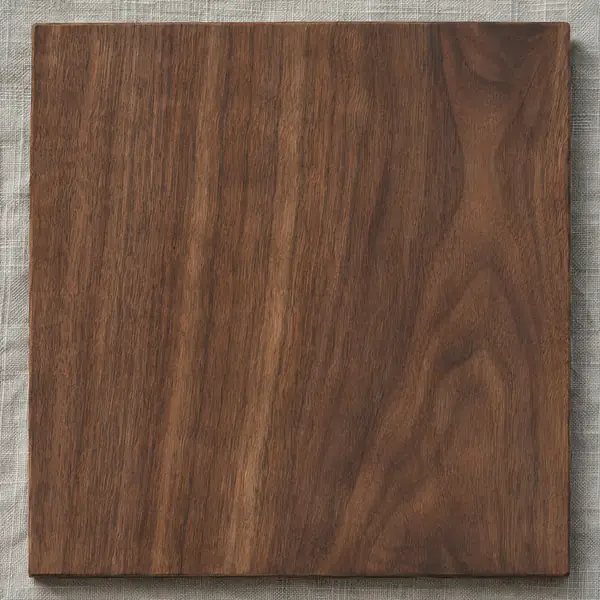
Nogal
Chapilla natural de tono cálido para cocinas, puertas y paneles.
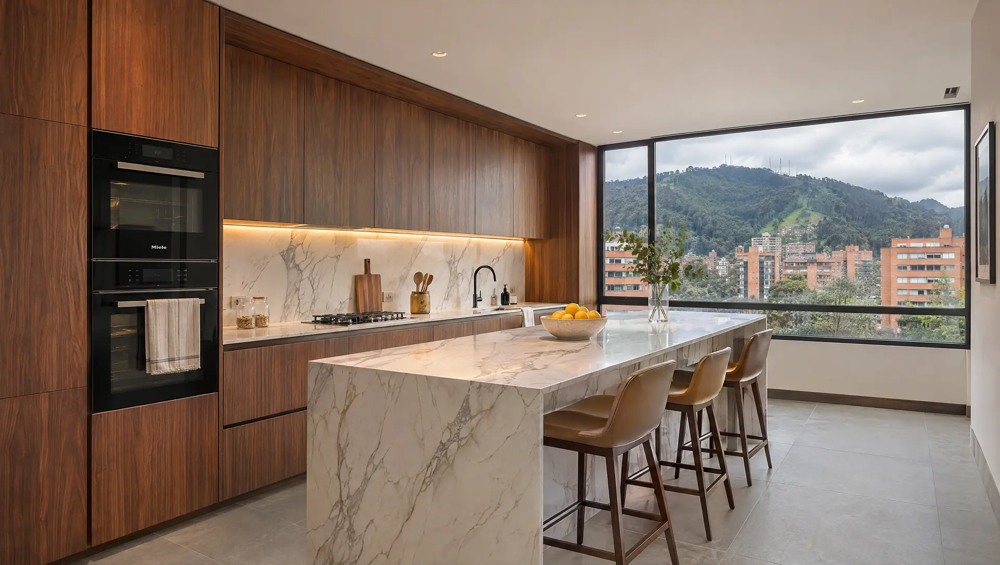
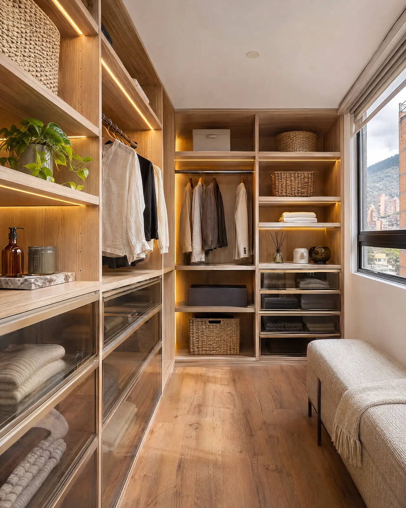
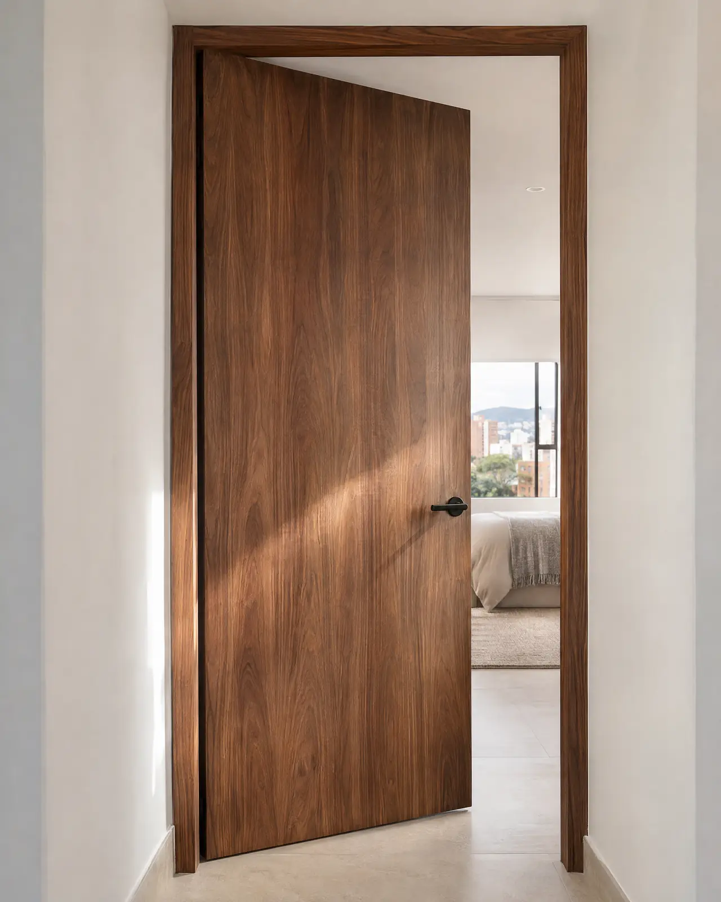
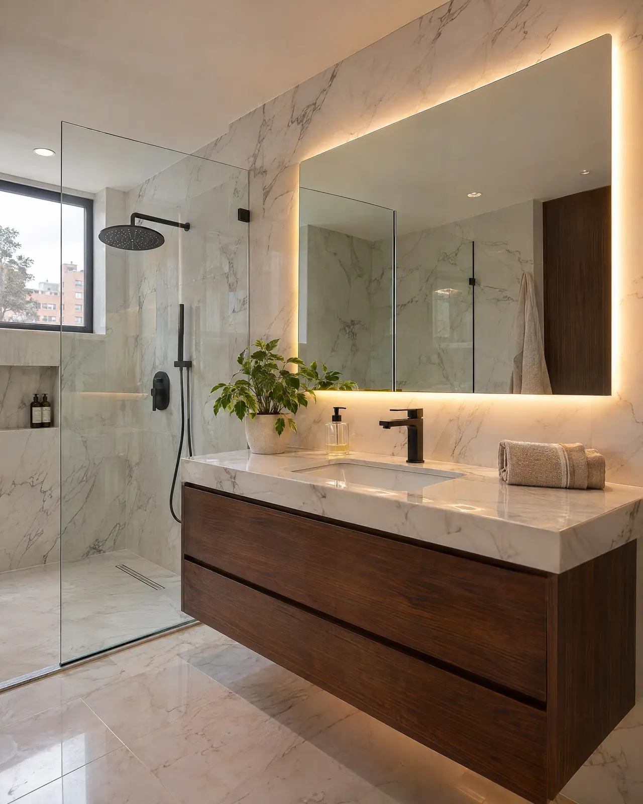
Cocinas
Cocinas, clósets, puertas y muebles de baño para apartamentos en Bogotá, sobre todo en el norte. Diseñamos, fabricamos e instalamos.
Medimos dos veces y cortamos una. Cada mueble sale de un plano hecho para tu apartamento.
Cocinas, clósets, puertas y baños a la medida para apartamentos en Bogotá, sobre todo en el norte. Más de 3 años en obra.
años haciendo carpintería y acabados en Bogotá
de Bogotá: donde más trabajamos, en conjuntos de toda la ciudad
Servicios
Un solo equipo se encarga del diseño, la fabricación y la instalación. Tú hablas con una persona de principio a fin.
Cocinas integrales a la medida del espacio, con mesones en piedra y muebles en chapilla o lacado.
Módulos pensados para lo que guardas: colgar, doblar, zapatos y cajones con cierre lento.
Puertas y marcos en madera, con herrajes ocultos.
Muebles de baño, mesones y enchapes.
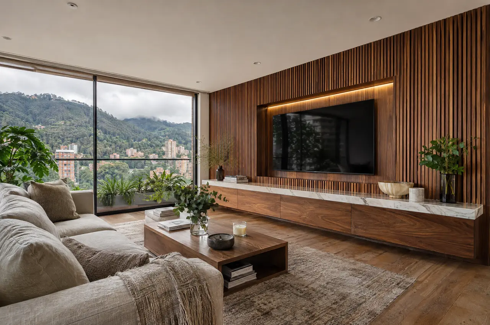
Centros de entretenimiento, paneles de listones, escritorios y bibliotecas.
Cómo trabajamos
Cada proyecto empieza como una línea en un plano. Baja para ver cómo esa línea se vuelve una cocina terminada.
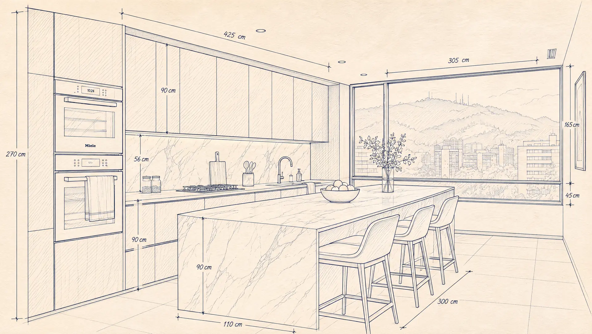
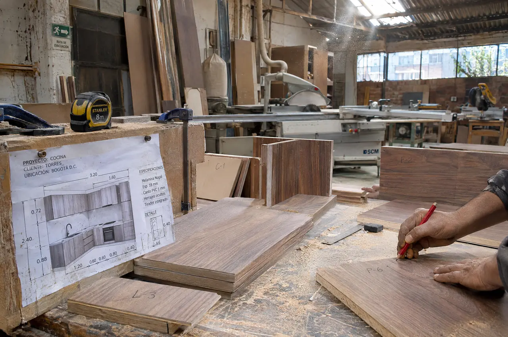
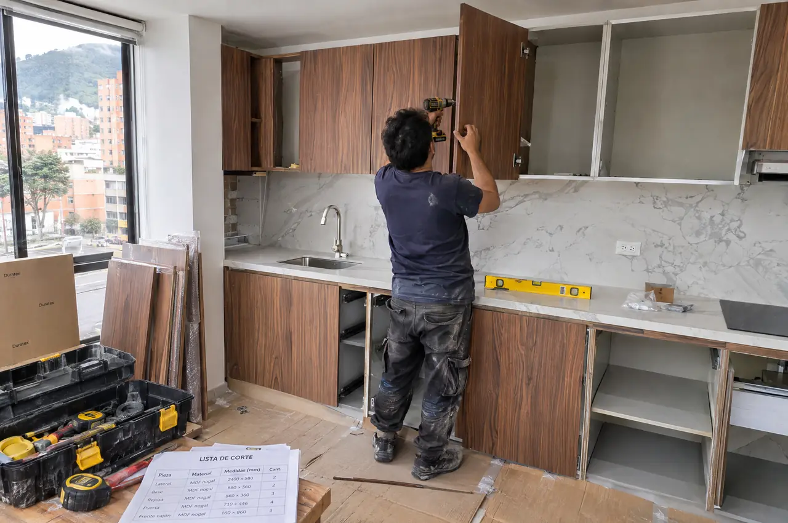
01 Medimos y dibujamosVisitamos el apartamento, tomamos medidas y dibujamos el plano de cada mueble antes de cotizar el valor final.
Cada pieza se corta y se marca según el plano. Así llega a la obra lista para armar.
Armamos, nivelamos y ajustamos puertas y cajones en el apartamento, con el piso protegido.
Revisamos cada detalle contigo y te dejamos el espacio limpio, listo para usar.
Antes y después
Desliza la línea para comparar. Mismo espacio y misma ventana; cambian los muebles, el mesón y la luz.
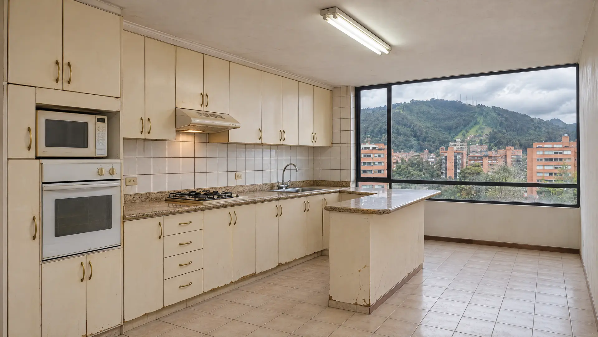
AntesDespuésProyectos
Cocinas, clósets, puertas, baños y muebles para apartamentos en Bogotá.
Una obra de Andok: muebles en nogal de piso a techo, torre para horno y nevera, y una isla con mesón blanco y costados en la misma madera.
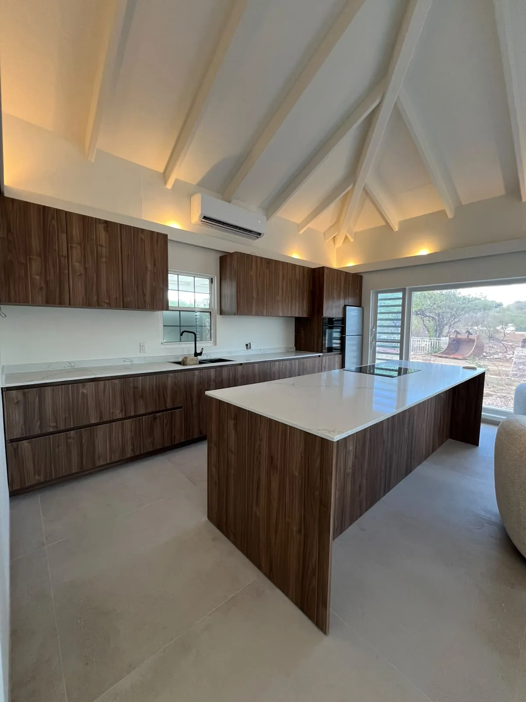
Materiales
Te mostramos las muestras en la visita para que elijas con el material en la mano.

Chapilla natural de tono cálido para cocinas, puertas y paneles.
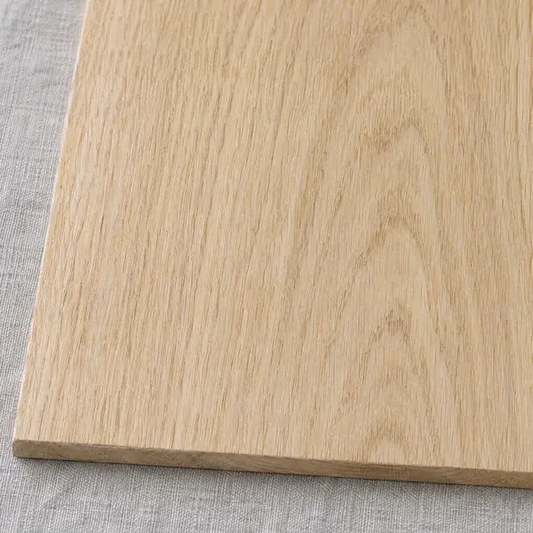
Chapilla clara de veta recta para clósets, estudios y vestieres.
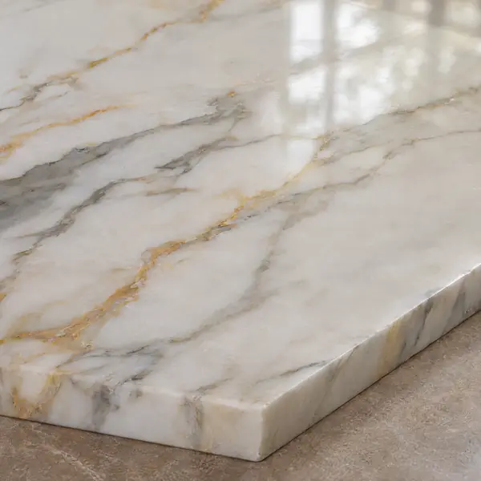
Mesones e islas con veta suave. Se sella para la cocina diaria.
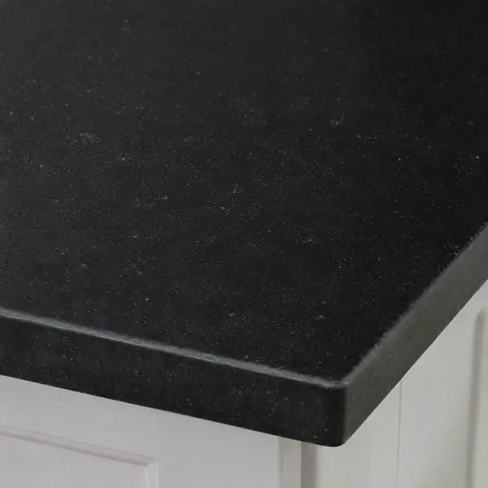
Mesón resistente al calor y a los golpes, de acabado mate.
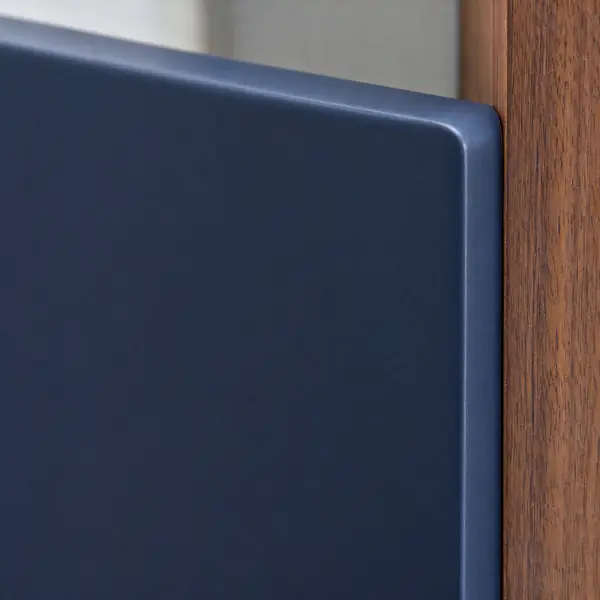
Puertas en color liso, como el azul Andino, con canto redondeado.
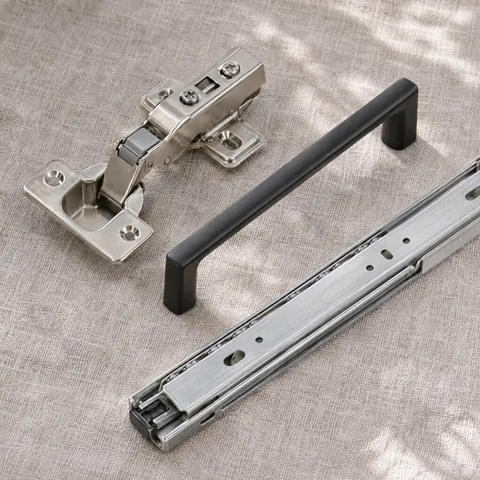
Bisagras y correderas con cierre lento, y manijas discretas.
Cotización por proyecto
Cuéntanos qué quieres hacer y en qué barrio queda el apartamento. Te respondemos por WhatsApp y agendamos la visita para medir.
También por correo: andokcarpinteria@gmail.com